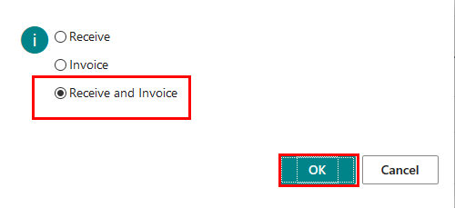
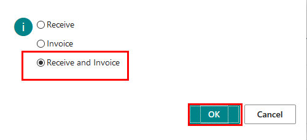
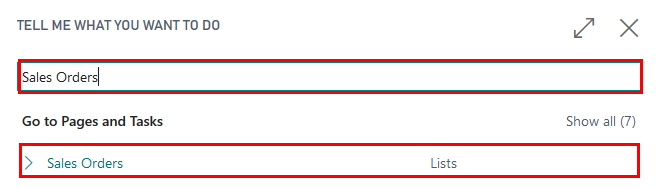
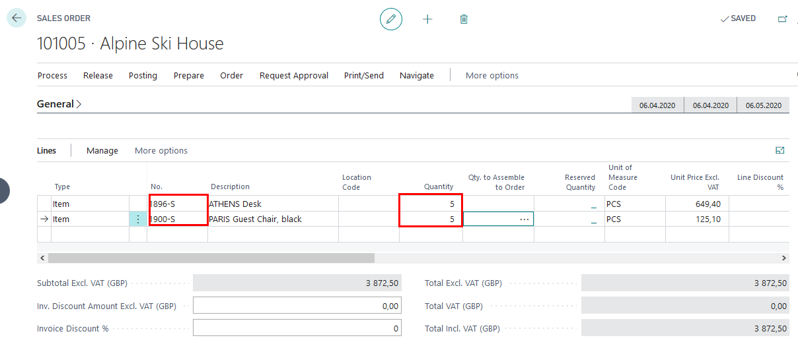
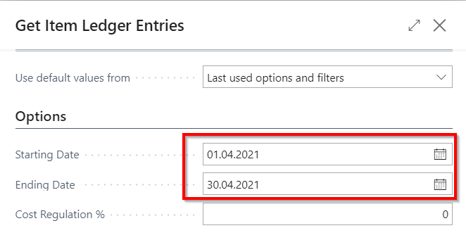
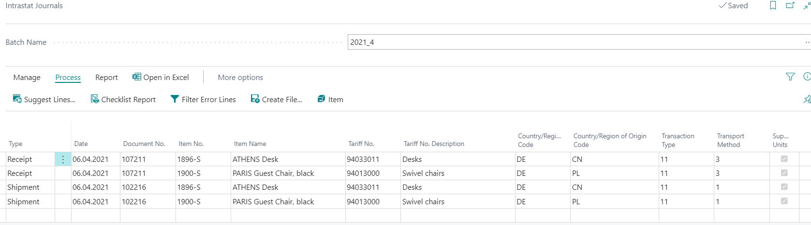
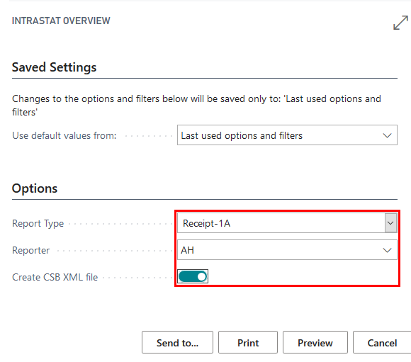

Overview
Latvian Intrastat Reporting Localization is a business software solution developed by Elva Baltic for companies that carry out business transactions in Republic of Latvia and are subjects to local Intrastat reporting.
Latvian Intrastat Reporting Localization is fully integrated with Dynamics 365 Business Central by extending its functionality and tailoring it to meet the requirements of local legislation and local business requirements.
The Application enables the user to: Prepare printouts and create XML files fully compliant with local Intrastat forms
- Receipt Intrastat - 1A
- Receipt Intrastat - 1B
- Shipment Intrastat - 2A
- Shipment Intrastat - 2B
Afterwards the forms can be uploaded into Electronic Data Collection system provided by Central Statistical Bureau.
Key Usage Scenarios
Walkthrough: Create evaluation company, import configuration package, process EU receipts and EU shipments
About this walkthrough: Configuration package LV.INTRASTAT.EVAL is to be imported into an evaluation company, in order to check the setup.
Roles: No specific user roles are required.
Story: You are John Roberts managing director of Cronus International. The company runs business in the sphere of sales of furniture and rendering consultation services related to interior design upon request of local customers. Cronus International is required report on shipments to EU and receipts from EU. You are assigned to test the settings on an evaluation company before adding the settings into your company.
Availability: can be accessed from Search for Page or Report…
Pre-requisites: No pre-requisites required
Create Evaluation Company
Click on the button Search for Page or Report...

Type Companies and select Companies from Lists

Press New, select Create New Company, press Next

Enter company name, for example, INTRASTAT-EVALUATION; set Evaluation-Sample Data in field Select the Data and Setup to Get Started

Press Next, Next, Finish
In My Settings, select your evaluation company

Configuration package import
Basic necessary system setup for the use of Latvian Intrastat Reporting Localization is created, when applying the configuration package LV.INTRASTAT.EVAL.
Click on the button Search for Page or Report...
Type Configuration Packages and select Configuration Packages from Lists

Select LV.INTRASTAT.EVAL package from list of Config. Packages and press Apply Package.

Configuration package ensures the following information:
- Intrastat Setup
- Transaction Type
- Transport method
- Tariff No.
Review Company Information
Click on the button Search for Page or Report...
Type Company Information and select Company Information from Pages and Tasks

Review Company Information is completed:
- Name
- Address
- Post Code
- Country
- Registration No. - copy the VAT registration number and set it as Registration No.
- VAT Registration No.

Add Tariff Numbers to the Tarif Number list
Click on the button Search for Page or Report...
Type Tariff Numbers and select Tariff Numbers from Pages and Tasks
3.Create two entry lines:
No. - 94013000
Supplementary Units - check
No. - 94033011
Supplementary Units - check
Update Item Cards with Tariff No. and Country of Origin
Click on the button Search for Page or Report...
Type Items and select Items from Pages and Tasks
Open Item card for item 1896-S
Update item card with
- Tariff No. - 94033011
- Country of Origin - CN
Open Item card for item 1900-S
Update item card with
- Tariff No. - 94013000
- Country of Origin - PL

Update Customer Card with VAT Registration No.
Click on the button Search for Page or Report...
Type Customers and select Customers
Open customer card Alpine Ski House (No. 40000)
Update customer card wih VAT Registration No. DE999999222

Prepare Purchase Order
Click on the button Search for Page or Report...
Type Purchase Orders and select Purchase Orders

Create New Purchase order for Vendor 30000 Graphic Design Institute
Complete the following data:
- Vendor Name - Graphic Design Institute
- Posting Date - 06.04.2020
- Document Date - 06.04.2020
- Vendor Invoice No. - 1111
- Shipment Method Code – EXW
- Transaction type - 11
- Transport Method – 3
Create 2 lines lines
Line type - Item
No. - 1896-S
Quantity - 10
Line type - Item
No. - 1900-S
Quantity - 10

- Post the document by receiving and invoicing
 

Prepare Sales Order
Click on the button Search for Page or Report...
Type Sales Orders and select Sales Orders 
Create New Purchase order for Customer 40000 Alpine Ski House
Complete the following data:
- Customer Name - Alpine Ski House
- Posting Date - 06.04.2020
- Document Date - 06.04.2020
- Shipment Method Code – CIF
- Transaction type - 11
- Transport Method – 1
Create 2 lines lines
Line type - Item
No. - 1896-S
Quantity - 5
Line type - Item
No. - 1900-S
Quantity - 5

- Post the document by shipping and invoicing


Create Intrastat journal, print reports and create files for Central Statistics Burreau
Click on the button Search for Page or Report...
Type Intrastat Journals and select Intrastat Journals
Create New Intrastat Journal Batch
Complete information for intrastat journal batch and press OK
- Name - 2020_04
- Description - 2020 April
- Statistics Period - 2004
In Intrastat journal batch 2020_04 press Suggest Lines
In options review that the filters are set and press OK
- Starting Date - 01.04.2020
- Ending Date - 30.04.2020

Review the lines created 
Print Intrastat Overview Report Receipt 1-A and set AH as Reporter
Print Intrastat Overview Report Receipt 1-B and set AH as Reporter


Print Intrastat Overview Report Shipment 2-A and set AH as Reporter

Print Intrastat Overview Report Receipt 2-B and set AH as Reporter

Create file for Intrastat Overview Report Receipt 1-A and set AH as Reporter
- Report Type - Receipt 1-A
- Reporter - AH
- Create CSB XML file - enabled

- Press PRINT
- Create a file for Overview Report Receipt 1-B and set AH as Reporter
- Report Type - Receipt 1-B
- Reporter - AH
- Create CSB XML file - enabled
- Press PRINT
- Create file for Overview Report Shipment 2-A and set AH as Reporter
- Report Type - Shipment 2-A
- Reporter - AH
- Create CSB XML file - enabled

- Press PRINT
- Create file for Overview Report Shipment 2-B and set AH as Reporter
- Report Type - Shipment 2-B
- Reporter - AH
- Create CSB XML file - enabled

- Press PRINT